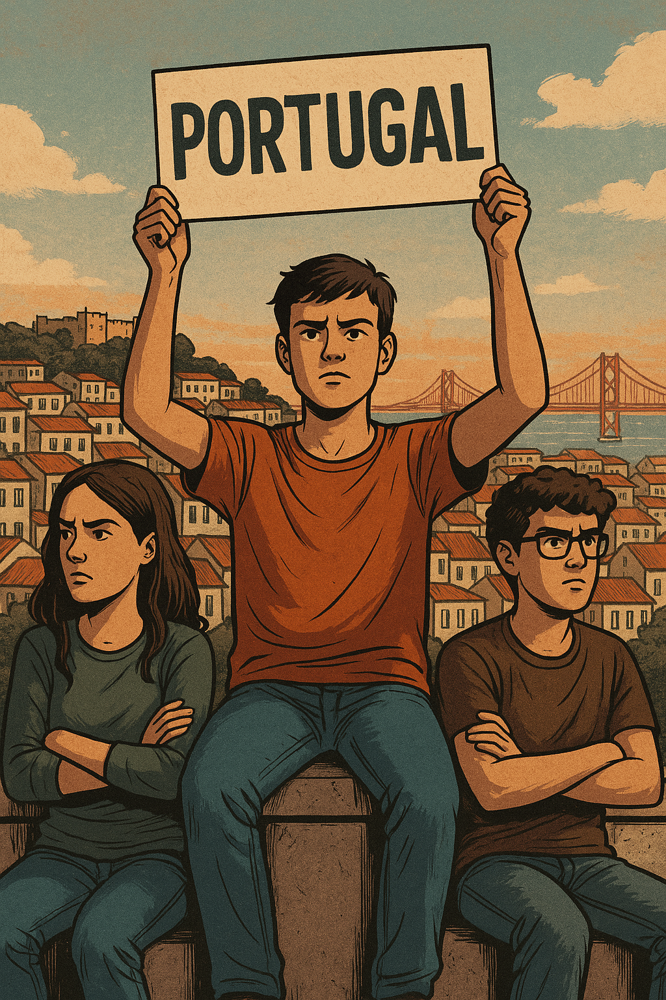

Publicado em 2025-04-13 09:49:25
Há um silêncio estranho que paira sobre Portugal. Não é o silêncio da ditadura, feito de medo e censura. É um silêncio mais insidioso, feito de conformismo, de promessas adiadas, de vozes que se habituaram a não ser ouvidas. E é neste país entre o passado que pesa e o futuro que tarda, que os jovens se encontram — muitas vezes perdidos, tantas vezes ignorados.
Portugal é um país envelhecido, literal e metaforicamente. Envelhecido nos rostos, nas políticas, nas instituições. Envelhecido na forma como olha os seus jovens: como apêndices, como números nas estatísticas da emigração, como força de trabalho descartável. Estudam, investem, sonham — mas encontram à porta do país salários de miséria, contratos a prazo e um sistema político onde raramente têm voz real.
O discurso dominante diz-lhes que são o futuro. Mas quem constrói esse futuro por eles? Onde está a escuta genuína, a aposta concreta, o risco político de os incluir verdadeiramente nas decisões? O sistema fala em inovação, mas bloqueia quem ousa pensar fora da caixa. Fala em democracia, mas repete sempre os mesmos rostos nas listas e nos palcos.
A juventude portuguesa não é apática — é desencantada. E com razão. Cresceu a ouvir falar de crise, ajustamento, dívida, cortes. Viu os pais lutarem por pouco. Viu os sonhos serem encolhidos pelo preço das rendas, pelo custo de um mestrado, pelo peso de um país que se habituou a pedir sacrifícios sem retribuir com justiça.
Mas há também sinais de esperança. Jovens que criam cooperativas, que escrevem, que se organizam, que reinventam formas de participação, que cuidam da Terra e da memória. Jovens que não esperam pelos partidos para fazer política, nem pelos media para dizer o que pensam.
O desafio, hoje, não é só resistir. É reconstruir. É não deixar que a mediocridade se normalize. É exigir mais — mais ética, mais visão, mais partilha. É recusar o papel de geração sacrificada e assumir o papel de geração transformadora.
Portugal precisa urgentemente dos seus jovens — não como símbolos, mas como protagonistas. E os jovens precisam de Portugal — mas de um Portugal que os respeite, os desafie e os inspire.
Talvez ainda estejamos a tempo de sermos dignos da juventude que temos.
Imagem destacada:
Upload da imagem A_digital_illustration_depicts_three_young_protest.png
(Representando três jovens de costas, com cartazes e cravos nas mãos, olhando para um país em reconstrução)
Introdução (parágrafo de destaque):
Numa nação envelhecida e marcada por promessas adiadas, os jovens enfrentam o peso de um futuro que tarda e de um presente que os marginaliza. Mas é também neles que reside a esperança de reconstruir Portugal — com lucidez, ética e audácia.
Francisco Gonçalves Categoria:
Crónicas / Sociedade / Política